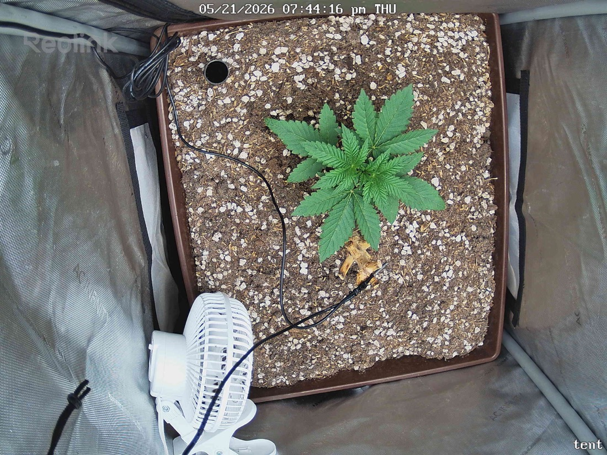

← All reports
May 21, 2026
Thu May 21, 2026 — 7:44 PM

Prognosis
Daily check-in — Papaya Crush (Day ~23 from germ, ~16 in tent)
- What changed (33 min apart): Essentially identical frames — same canopy spread, leaf posture, and color. This is a back-to-back test pair, not a daily delta.
- Color/structure: Deep, even green across all fan leaves; serrations crisp; symmetric radial growth around the apex. No tacoing, cupping, or clawing.
- Posture: Petioles holding leaves flat-to-slightly-upward — classic "happy" pose under good PAR. No drooping or praying-to-the-sky stress signal.
- Tips/margins: Clean — no burn, no yellow rim, no interveinal mottling. Edges look healthy at 400 PPFD.
- Soil surface: Dry-looking top layer with perlite visible, expected on day 2 since the May 19 water. The browned cotyledon/old leaf at the base is the no-till litter — leaving it.
- Pests/disease: Nothing visible — no spots, webbing, frass, or powdery residue on inspected leaves.
- Phase check: ~3.5 weeks from germ, ~5–6 node sets visible, stout internodes, no stretch. Right on track — arguably slightly ahead of average for a 2x2 under SF-2000 at this stage.
- Next actions: No action needed. Hold at 400 PPFD, expect to water in 2–3 days (check by pot lift). Next snapshot is the real comparison point.
Overall: Textbook healthy late-seedling/early-veg — keep doing exactly what you're doing.